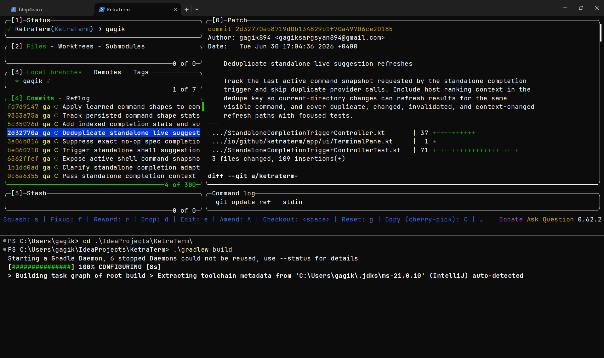

For Windows, macOS, and Linux
Your shell.
More space.
Keep your shells side by side, find past commands, and make the terminal your own.
Choose an operating system to see packages.
Checking release availability…

More room to work.
Keep the terminal workflow you know.
Give it a workspace of its own.
Tabs. Splits. Your shells.
Run sessions side by side. Name your tabs and give them their own accent colors.
Shells & sessions ↗Find the command. Keep the output.
Use command markers and exit status, jump through commands, and copy their output in supported shells.
Commands & output ↗Set the tone.
Choose your palette, fonts, line height, and cursor. Appearance settings update your open panes.
Appearance & settings ↗Ready when you are.
Start a session, check shell support, or turn on suggestions.